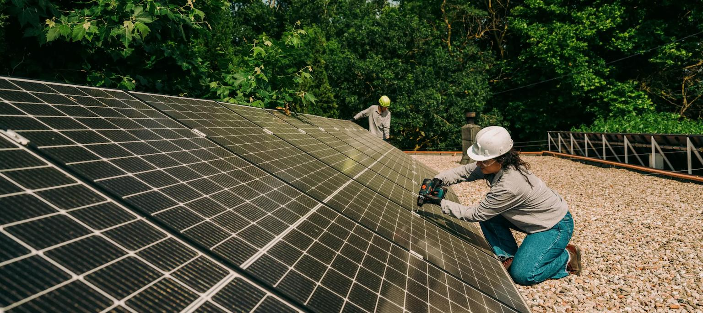
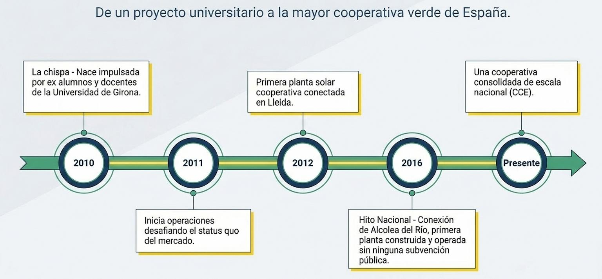

Mutagénesis convergente es la primera novela española solarpunk.
Som Energía es una cooperativa energética 100% renovable y sin ánimo de lucro

Este es uno de los proyectos que sigo desde hace muchos años y es de los que más me ilusiona. Se trata de una cooperativa energética sin ánimo de lucro que producen energía 100% renovable. Soy socio cooperativista casi desde el principio. Todos los contratos de la luz de familiares y propios los tenemos con ellos. Cada año se vota en asamblea si usar los beneficios para bajar el precio de la luz a los socios o en reinvertirlos en producir más energía renovable y siempre sale lo segundo, lo que os da una idea del compromiso de los cooperativistas.
Aunque cuando hablas con amigos, sigue siendo una desconocida, la realidad es que tras estos quince años, la cooperativa Som Energía se ha consolidado como el actor más disruptivo en la transición energética española. Lo que comenzó como un proyecto académico es hoy una realidad que gestiona más de 120.000 contratos de suministro eléctrico y agrupa a más de 87.000 asociados, desafiando la histórica concentración del mercado eléctrico en España.
Ya no recuerdo donde lo escuché, si fue en la radio o en un podcast. El asunto es que un profesor de la Universidad de Girona —luego aprendí que era Gijsbert Huijink, un neerlandés— quería poner placas fotovoltaicas en su casa para reducir su huella ecológica y se encontró con un montón de trabas burocráticas. Como indivíduo era casi imposible legalmente en 2010, líos de productor, etc… Total que se decidió a buscar alternativas al modelo eléctrico convencional. Así que la historia de Som Energía comenzó a gestarse en noviembre de 2009 y, poco a poco, un grupo de antiguos alumnos y profesores, junto a diversos colaboradores se pusieron manos a la obra para replicar en España modelos de éxito europeos como Ecopower (Bélgica) o Enercoop (Francia). La cooperativa se fundó oficialmente el 11 de diciembre de 2010 en el Parque Científico y Tecnológico de la citada universidad, convirtiéndose en la primera de su tipo en el país.
"Esto no va solo de luz"
La principal motivación de sus fundadores no fue simplemente vender electricidad, sino transformar el modelo energético actual. Sus pilares se asientan en la justicia social, la soberanía energética y la lucha decidida contra el cambio climático. Som Energía nació para demostrar que es posible ofrecer energía 100% renovable a un precio justo a través de una organización sin ánimo de lucro que reinvierte sus beneficios en nuevas plantas de generación. Su lema «esto no va de luz» refleja un inconformismo que busca democratizar el sector y poner el poder de decisión en manos de las personas. Yo, sinceramente, estoy muy de acuerdo con estos ideales. Y esa es la razón por la que sigo, aunque siempre haya electricas más baratas. Esta es 100% renovable y su idiosincrasia coincide mis valores ecologistas.

A diferencia de las eléctricas tradicionales, en Som Energía es todo muy asambleario. El modelo se basa en una gobernanza democrática donde cada socio tiene un voto, independientemente de su capital aportado.
Para reducir la dependencia del mercado mayorista, Som Energía ha desarrollado modelos de financiación e innovación social únicos:
Por otro lado, ahora mismo, la cooperativa ya produce más de 71 GWh anuales mediante instalaciones fotovoltaicas, hidráulicas y de biogás distribuidas por todo el territorio.
Som Energía ha ganado premios por su gestión y compromiso, y sirve de inspiración para otras cooperativas europeas y nacionales, como Coopérnico en Portugal. Cuenta con un equipo técnico que ya supera las 130 personas organizado de forma horizontal y autogestionada, sigue demostrando día a día que la transición energética liderada por la ciudadanía es la única vía posible para un futuro sostenible y justo.
Mutagénesis convergente es la primera novela española solarpunk.